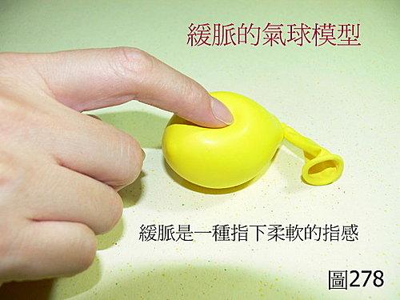
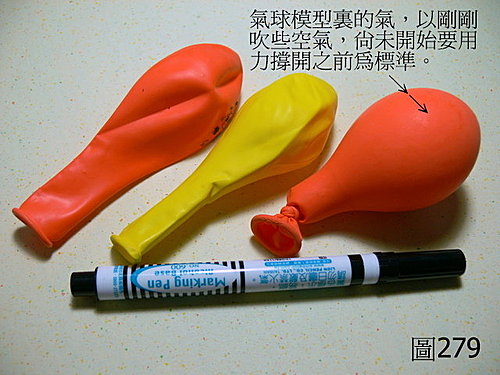

脈理醫理學 33.13：緩脈
作者：陳建元
說明：
緩脈是脈法中最難掌握的一個脈。緩脈是一種脈形，和脈跳的頻率快慢、脈位無關（即緩脈可以和數脈、遲脈、浮脈、沉脈等相兼的意思）。緩脈的模型，可以用氣球模型來表示，〈圖278、279〉。 這個氣球不能吹得太大，吹得太大之後，手指按下去的反彈力會比較硬（大），這樣模型就不太像了，一般而言，先把氣球先拉長拉鬆幾次後，然後反覆吹幾次，先把整個橡皮的筋撐開拉開，放掉空氣後，然後再重新吹入少量的空氣，趁氣球要開始撐開之前，就停止吹氣綁起來了，這時候按氣球，是富有柔軟彈性的，這時的軟硬度，為最適當之緩脈模型。


本質和病機：
主虛、主濕。緩脈是一個比較特別的脈，如上述的氣球模型，當其脈位在中位時，其實摸起來的指感，和第 25 條的平脈包子皮模型，其實非常類似而分不出來，所以緩脈的脈位若是居於中位的時候，一般當成平脈，並不當成病脈來看待，但若是緩脈的脈位不居中，而是和其他脈象相兼，譬如浮緩、沉緩，或是細緩、澀緩，這時就當成病脈來看待了。
兼脈：
浮細緩或浮緩為外感風濕。沉緩主濕。沉遲緩為寒濕。沉數緩為濕熱。虛緩為氣血不足。
六部緩脈、治療藥物：
右寸浮細緩：為外感風濕，為頭身困重；治用香薷、羌活、獨活。
右關浮細緩：為外感風濕在脾胃，為腹脹腹瀉；治用香薷、防風。
右尺、左尺浮細緩：為外感風濕在下焦；治用獨活、防風、藁本。
左寸浮細緩：為外感風濕在心系，為胸悶短氣；治用桂枝、川芎、絡石藤。
左關浮細緩：為外感風濕在肝系，為筋骨酸痛；治用防風、威靈仙、五加皮。
若是六部沉緩脈，則用六部的去濕藥。
若是六部沉數緩脈，則用六部的去濕熱藥。
若是外候、舌苔皆無濕的特徵，只有虛損的特徵，六部的虛緩脈為氣血不足，則用六部的補氣血藥。
‥‥‥‥‥‥‥‥‥‥‥‥‥‥‥‥‥‥‥‥‥‥‥‥‥‥‥‥‥‥‥‥‥‥‥‥‥
或問：老師您好 ，對於緩脈是一種脈形，和速率無關這點，跟不少醫家的主張不同，像滑澀脈老師有解釋，所以好懂。 小弟智慧未開，還請老師說詳細一點，感恩！
答：
1. 有些醫家是遷就在讀音或望文生義上，主張緩就是〝緩慢〞、〝慢〞的意思，所以把緩脈歸為遲脈之一類，或許這是智者千慮或有一失。事實上緩脈另有所指，一般而言，位於中位的和緩之脈為平脈，若是緩脈為遲脈之類，則為病脈了，如何是平脈呢？或是說緩脈是一息四至的一種速率，這也搭不起來，因為太多的浮緊、沉滑、弦緊‥‥‥諸病脈，都可以一息四至，但它們是病脈，並不能因為它們一息四至，就當成緩脈而歸為平脈，故也可以知道緩脈當成速率來看，是不妥當的。另外在脈學之祖《脈經》開頭的序中，就已經很明白地指出〝如果把緩脈當成遲脈，就要誤傷人性命了〞告誡後者不可犯這個錯誤 。（請參看脈經序）
2. 最重要的，是要從臨床上的病理結構來看，就不會有疑惑，虛脈和緩脈是有關聯性的，虛脈一般是氣不足（氣虛），氣虛生濕是常見的臨床病理規律，所以虛脈和緩脈是前後脈的關係，也就是說兩者可以互相轉換的意思，虛脈久了會生濕，就會變成緩脈，緩脈把濕除去了，一般也是退回成虛脈，這在臨床上是容易觀察到的，而且兩者的脈形也必然要有關聯性，虛脈是按棉花團，緩脈是按氣球，兩者的指感，很明顯是同一系統的前後脈的關係，所以以臨床上的病理結構來看，把緩脈當成速率之類來看，明顯是錯誤的。
3. 天生萬物，必然各有所用而各佔一個位置，28脈是基礎的常見脈，若緩脈是速率，那和〝濕〞的關聯性就不大了，如此一來，28脈中，就只有一個濡脈主常見的外感風濕，而臟腑生內濕的部分，就找不到脈來相對應了，而事實上，內濕是常見的病理，必然有常見的病脈與之相對應，否則是不符合臨床規律的，而又由第2點的虛可生濕的病裡規則，又可以知道此脈形當離虛脈不遠，而臨床可觀察到的，就是如按氣球狀的緩脈了。
4. 另外要注意的，緩脈最常見的，就是位於第四層，也就是沉緩主濕。但濕有兩種，一種是單純的濕，這是實證；一種是虛而生濕，這是虛中夾實證，實證用去濕藥除去濕邪後，脈象就會朝平脈的方向靠攏；若是虛而生濕，用去濕藥除去濕邪後，就會朝虛脈的方向靠攏。另外也要注意，譬如脾氣虛，可直接用補，但若是日久，由脾氣虛進而演變成脾氣虛生濕時，這時用補是補不進去而會反彈的，這是因為濕邪是實邪，阻滯絡道故補不進去，這時在脈象上，就是由虛脈轉成沉緩脈了，治療的時候，要先用去濕藥除去濕邪後，脈象就會由緩脈，又退回較空虛指感的虛脈，這時再用補藥，就可以補進去了。
5. 緩脈之義久不講矣，或以緩脈為遲脈之類，這導致一大扇以〝內濕〞為主病理結構或副病理結構之疾病，憑空消失掉，病源不明而不知從何處來下手治療，自古以來就是中醫治療上的一大空缺，今補缺在這邊，這一大票是什麼病？緩為濕邪，其性黏膩，慢性浸潤而難去除，又以慢性病居多，以第四層的緩脈而言（濕或濕熱），以六脈分部來看，它們分別是：
肺脈有濕，常見於慢性肺病中，如老慢支，黃芩、蘇子、桑白皮之類可消除。
脾脈有濕，常見於慢性胃病和濕疹、 異位性皮膚炎中，茯苓、砂仁、草果之類可消除。
兩尺有濕，常見於慢性腎病中，黃柏、澤瀉、茯苓、昆布、海藻之類可消除。
左寸有濕，常見於慢性心臟疾病，桂枝、茯苓之類可消除。
左關有濕，常見於慢性肝炎之類，龍膽草、虎杖根之類可消除。
用上述這些藥，於臨床觀察上，發現可以逐漸迫使第四層的緩脈（濕或濕熱）消失，緩脈不是速率之義更明矣。
【引用請先來信告知徵求同意，若有涉及販售營利等商業行為，版權所有拷貝盜用必究。】
【藥王脈學講壇】http://blog.xuite.net/drjychen/twblog